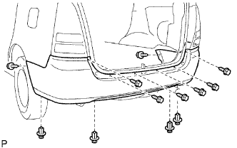

CẢM BIẾN SIÊU ÂM > LẮP |
| 1. LẮP CẢM BIẾN SIÊU ÂM NO.1 |
Lắp cảm biến siêu âm vào tấm bắt ba đờ xốc sau như được chỉ ra trên hình vẽ.
| 2. LẮP CÁI HÃM CẢM BIẾN SIÊU ÂM NO.1 |
Lắp cái hãm cảm biến siêu âm như được chỉ ra trên hình vẽ.
| 3. LẮP NẮP BA ĐỜ XỐC SAU |
 |
Hãy dán băng dính bảo vệ phía dưới tai xe sau.
w/ Hệ thống cảnh báo khoảng cách:
Nối 2 giắc nối.
Nhả khớp 12 vấu để lắp nắp ba đờ xốc.
|  |
Lắp 8 vít và 4 kẹp.
| 4. NỐI CÁP VÀO CỰC ÂM ẮC QUY |
| 5. TIẾN HÀNH THIẾT LẬP BAN ĐẦU |
Tiến hành thiết lập ban đầu (Xem trang Kích chuột vào đây).